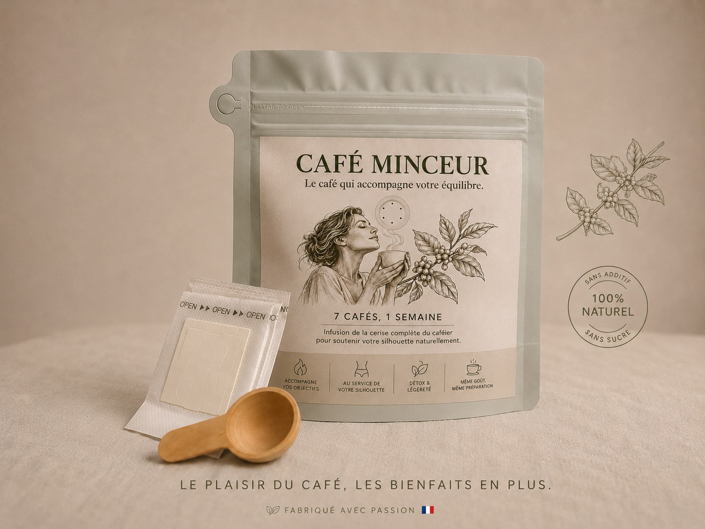
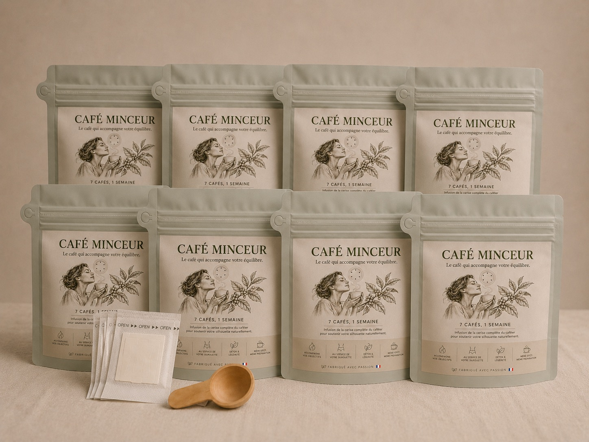
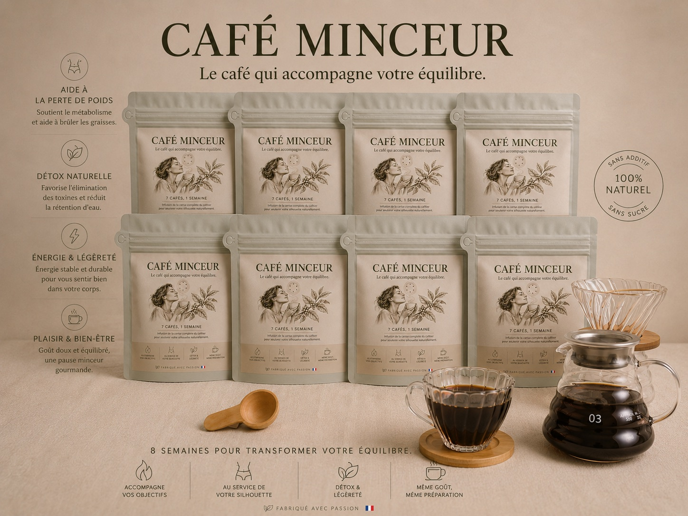
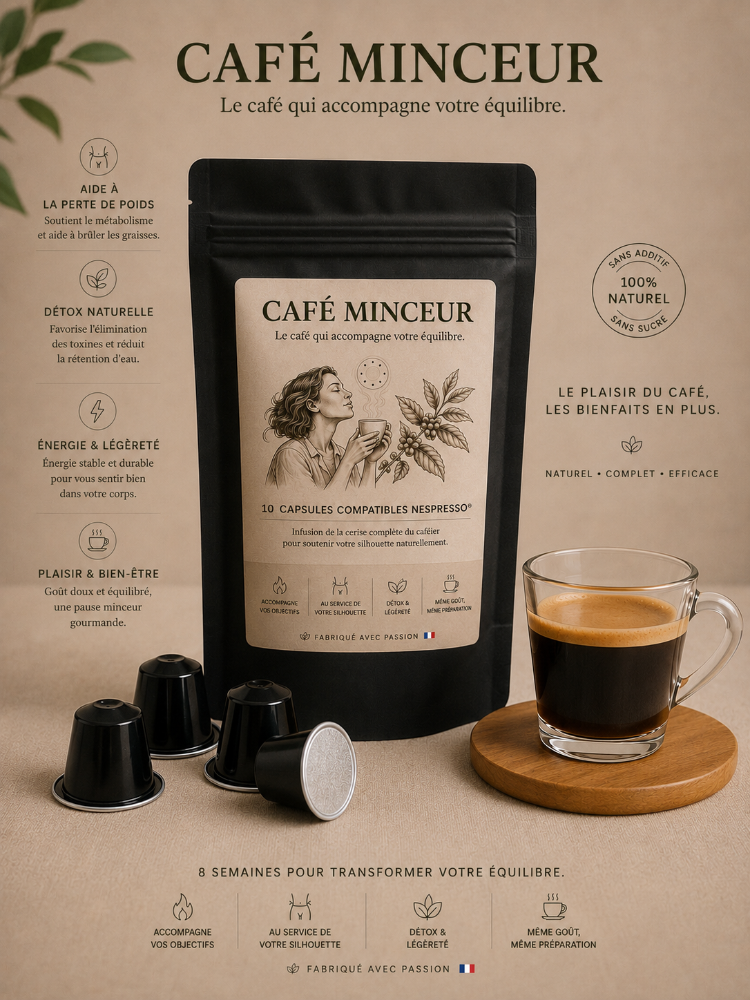

Café minceur au goût de vrai café
Le café qui accompagne votre équilibre.
Un café minceur naturel pensé pour accompagner votre objectif silhouette, avec le plaisir d’un vrai café et la simplicité d’un rituel déjà familier.
-55%
sur le paquet découverte 1 semaine: 70 g de café, cuillère doseuse offerte et 7 sachets pour infuser.

Acheter en confiance
Des repères clairs avant de commander.
Le site reste simple, avec les informations importantes faciles à trouver: paiement, livraison, rétractation, données personnelles et limites des résultats.
La commande est finalisée sur Stripe, une plateforme de paiement reconnue, avec carte bancaire et moyens compatibles selon votre appareil.
Les offres actuelles sont des achats ponctuels: découverte 1 semaine, cure 8 semaines, Coffee Maker ou capsules.
La livraison est offerte sur la cure 8 semaines. Les commandes sont préparées selon le stock disponible, avec un délai précisé au moment du paiement.
Les études citées servent de repères scientifiques. Elles ne portent pas directement sur ce produit et ne garantissent pas un résultat individuel.
Repères scientifiques
Les études sur le café vert donnent un signal intéressant.
Ces repères viennent de plusieurs essais cliniques randomisés et d’une méta-analyse portant sur le café vert, les acides chlorogéniques et le poids. Les protocoles comparent généralement un groupe café vert à un groupe placebo, avec des suivis allant d’une semaine à plusieurs semaines, et des mesures moyennes de poids, de tour de taille ou de composition corporelle.*
Perte moyenne observée dans l’étude courte Al-Dujaili et al. sur café vert.
Perte moyenne du groupe café vert dans l’étude Roshan et al.
Perte moyenne du groupe café vert dans l’étude Shahmohammadi et al.
Perte de -13,8 cm² de graisse abdominale dont -9,0 cm² de graisse viscérale, la graisse abdominale profonde, dans l’étude de Watanabe et al. 2019.
*Ces résultats proviennent d’études sur extrait de café vert, pas d’une étude clinique réalisée directement sur ce produit. Les résultats individuels varient et aucune perte de poids n’est garantie.
Même geste, meilleure régularité
Remplacez simplement votre café habituel.
Le café se prépare comme un café classique, ou simplement avec les sachets offerts. L’objectif est de supprimer la friction: si vous buvez déjà du café, vous savez déjà commencer.
1. Dosez
Utilisez la cuillère doseuse offerte pour préparer votre café du matin.
2. Préparez
Filtre, piston, moka, machine adaptée, ou sachet d’infusion: gardez votre méthode préférée.
3. Répétez
Un café par jour. Sept jours pour tester, huit semaines pour une vraie cure.
100% issu de la cerise de café
Pas de champignon, pas d’arôme étrange, pas de promesse magique.
Ce café minceur reste un vrai café. Sa différence vient d’un procédé développé par Café Intégral, une marque française positionnée sur une approche haut de gamme du fruit du caféier: mieux valoriser la cerise de café, sans ajouter d’ingrédient étrange ou artificiel.
Le produit est formulé à partir de la cerise de café: café torréfié, café vert, cascara et café intégral. Cette approche permet de parler de composés naturellement présents dans le café et son fruit, étudiés pour leur intérêt dans le métabolisme, le poids ou le confort digestif.
Polyphénols & acides chlorogéniques
La cerise de café concentre une richesse naturelle en polyphénols, dont les acides chlorogéniques. Ces composés sont étudiés dans le contexte du poids, du métabolisme et de l’équilibre oxydatif.
Référence: méta-analyse 2023Trigonelline
Composé naturellement présent dans le café, étudié notamment pour ses effets sur la réponse glucose/insuline et le métabolisme lipidique.
Référence: essai humain van Dijk et al.Mélanoïdines
Issues de la torréfaction, elles participent au goût rond du café et sont étudiées pour leur potentiel antioxydant, leur rôle de fibres alimentaires et leur interaction avec le microbiote intestinal.
Référence: revue sur les mélanoïdines du caféFibres & polysaccharides
La cerise de café et certains coproduits du café contiennent des fractions fibreuses et polysaccharidiques étudiées pour leur rôle prébiotique et digestif.
Référence: revue sur les oligosaccharides du caféAttention & concentration
La caféine naturellement présente dans le café est étudiée pour soutenir l’attention, la vigilance et la rapidité de réaction, surtout lorsqu’elle est consommée le matin.
Référence: revue sur caféine et attentionMémoire & cognition
Des extraits de cerise entière de café ont été étudiés chez l’adulte plus âgé pour leurs effets sur certains marqueurs et performances liés à l’attention et à la mémoire de travail.
Référence: extrait de cerise de café et cognitionOffre de lancement
Commencez par 7 jours, ou partez sur la cure complète.
Chaque paquet contient 7 cafés. Le principe est volontairement simple: vous remplacez votre café habituel par ce café minceur, une fois par jour.

Découverte 1 semaine1 paquet de 70 g
14,85 €33 €
Pour essayer sans vous engager et vérifier que le goût vous convient.
Au moment du paiement, entrez le code DECOUVERTE pour obtenir le tarif découverte.
- 7 cafés pour 7 jours
- Cuillère doseuse offerte
- 7 sachets pour infuser offerts
- Réduction exceptionnelle de 55%
Le format le plus choisi pour la cure complète

Cure recommandée 8 semaines8 paquets de 70 g
La cure complète, simple à suivre: 1 café par jour pendant 56 jours.
80 €264 €
Le meilleur rapport quantité/prix: la cure revient à 10 € par semaine, livraison offerte.
Le format le plus cohérent pour installer le rituel et suivre une durée proche des essais cliniques de 8 semaines cités plus haut.*
56 cafés
10 €/semaine
Livraison offerte
- 56 cafés pour 56 jours
- Cuillère doseuse et sachets offerts
- Livraison offerte
- Soit 10 € par semaine

Option Coffee Maker
Cure 8 semaines + Coffee Maker
295 €
Pour préparer votre café minceur avec un rituel élégant, simple et régulier.
Ajouter le Coffee MakerOption capsules
Vous préférez les capsules?
Une version en capsules compatibles Nespresso est prévue pour celles qui veulent garder le geste capsule: 10 capsules à 20 € pour tester simplement ce format.

Questions fréquentes
Ce qu’il faut savoir avant de commencer.
Le produit est présenté comme un café minceur d’accompagnement. Il ne remplace pas une alimentation équilibrée, une activité physique adaptée ou un avis médical.
Est-ce que ce café fait maigrir?
Ce café n’est pas comme les autres, car il contient des parties du fruit du caféier dont certaines études ont observé des pertes de poids chez les personnes qui les ont consommées. Les chiffres cités viennent toutefois d’études sur des parties de la cerise de café, ou sur des extraits associés, et non d’une étude directe sur ce produit. Nous ne pouvons donc promettre aucun résultat garanti: ce café accompagne simplement une démarche minceur.
Est-ce que le goût ressemble à du café?
Oui. C’est précisément l’intérêt: remplacer le café habituel sans goût bizarre et sans sensation de boisson “régime”. L’objectif est de garder une tasse familière, agréable, et facile à intégrer dans la routine du matin.
Est-ce que cela contient de la caféine?
Oui, naturellement. Si vous êtes sensible à la caféine, évitez d’en consommer le soir et demandez un avis médical en cas de traitement ou de condition particulière.
Est-ce un abonnement?
Non. Les offres affichées sont des achats ponctuels. Vous choisissez le format qui vous convient, puis la commande est réglée une seule fois sur Stripe.
Comment se passe le paiement?
Le paiement se fait sur une page Stripe sécurisée. Vous renseignez vos informations de paiement et de livraison directement sur la page de commande.
Et pour les retours?
Les retours sont possibles lorsque le produit peut être retourné dans un état conforme. Les frais de retour sont à la charge du client, sauf défaut, erreur de préparation ou non-conformité avérée.
Pourquoi proposer une cure de 8 semaines?
Plusieurs essais cliniques cités sur le café vert ont duré 8 semaines. C’est une durée simple à comprendre pour installer le rituel et suivre son évolution.
Commencer simplement
Votre prochain café peut devenir votre premier jour.
Pas besoin d’ajouter une nouvelle contrainte. Pendant une semaine, remplacez simplement votre café habituel par ce café minceur et observez votre ressenti.
7 cafés pour 14,85 €
Cuillère doseuse et 7 sachets d’infusion offerts pendant le lancement.
Code promo à entrer au moment du paiement: DECOUVERTE.
Essayer 1 semaine